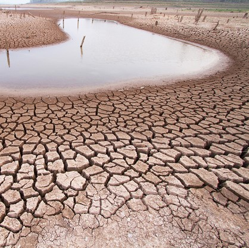

Salinisation des sols en Egypte. Un effet assez innatendu de la montée
des eaux est la salinisation des sols. En Egypte par exemple, cela peut mener
à la perte de terre agricole cruciale pour le pays.
La montée des eaux est principalement causée par le réchauffement
climatique, qui entraîne la fonte des glaciers et des calottes polaires.
L’expansion thermique des océans, due à l’augmentation de la température
de l’eau, contribue également de manière significative. Par ailleurs,
la déforestation et l’urbanisation accélèrent le phénomène en modifiant
les écosystèmes naturels qui régulent l’eau.